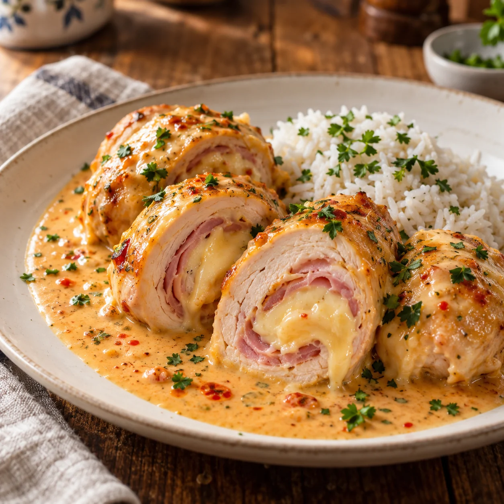

Unsere Klassiker · Ofengerichte
Hähnchen Rouladen
Rezept von Ina Lehr

Saftige Hähnchen Rouladen, gefüllt mit Kochschinken und Gouda, garen in einer cremigen Sweet-Chili-Schmand-Soße ganz entspannt im Ofen.
Zutaten
1 kgHähnchenbrustfilet
1 Pck.Kochschinken
1 Pck.Gouda in Scheiben
3 BecherSchmand, je etwa 200 g
200 mlSweet-Chili-Soße
200 mlWasser
1 ELGemüsebrühepulver
Nach GeschmackSalz
Nach GeschmackPfeffer
Nach GeschmackPaprikapulver, edelsüß
Zubereitung
- Den Backofen auf 210 °C Ober-/Unterhitze vorheizen. Eine große, ofenfeste Form mit passendem Deckel bereitstellen.
- Die Hähnchenbrustfilets längs halbieren und zwischen zwei Lagen Frischhaltefolie vorsichtig etwas flacher klopfen. Dadurch lassen sie sich später leichter einrollen.
- Jedes Stück Hähnchenfleisch mit etwas Salz, Pfeffer und edelsüßem Paprikapulver würzen. Anschließend jeweils mit einer halben Scheibe Kochschinken und einer passenden Scheibe Gouda belegen.
- Die belegten Fleischstücke straff aufrollen und mit der Naht nach unten nebeneinander in die ofenfeste Form legen.
- Schmand, Sweet-Chili-Soße, Wasser und Gemüsebrühepulver glatt verrühren. Die Soße gleichmäßig über die Hähnchen Rouladen gießen.
- Die Form mit dem Deckel verschließen und die Rouladen im vorgeheizten Ofen etwa 60 Minuten garen. Anschließend direkt mit der cremigen Soße servieren.
Dazu passt
Reis passt besonders gut zu den Hähnchen Rouladen und nimmt die cremige Soße wunderbar auf.